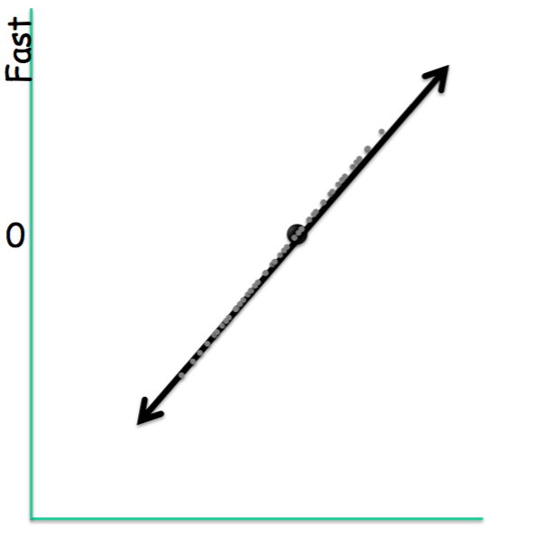

How it Works?
PCA finds the direction of greatest information by computing the directions of greatest variance, and then projecting the dataset onto vectors that correspond to those directions. This is because redundancy can be quantified with variance and covariance.
The directions of greatest variance in a dataset are given by the eigenvectors of the covariance matrix of that dataset, which in turn is given by variance and covariance. Variance is a measure of the spread of one variable. Covariance is a measure of the spread between two variables. Formally, the two are similar:
Here, and refer to the mean of and , respectively.
The covariance matrix, which is central to PCA, is composed of all variance and covariance measures of our dataset. The element of the matrix is the covariance between i-th and j-th variable. For 3 dimensions, the covariance matrix C is given by:
Where refers to . Notice that for a D-dimensional dataset, we will always have a DxD covariance matrix.
A matrix A has an eigenvector v with the associated eigenvalue if
where A is a square matrix, v is a column vector, and is a scalar. For an NxN square matrix, there are always N eigenvectors with associated eigenvalues for that matrix.
Eigenvectors have many useful properties that are leveraged in science and engineering, but the exact reasons behind why they’re so essential to PCA is outside the scope of this article. It will suffice to say that the eigenvectors of the covariance matrix correspond to the directions of ranked variance described above. Specifically, the eigenvector of the covariance matrix with the largest eigenvalue always points to the direction of greatest variance in the data. This is called the first eigenvector. The second eigenvector points in the direction that has the largest variance of all those directions that are orthogonal to the first eigenvector. The third eigenvector, correspondingly, points in the direction that has the largest variance of all directions orthogonal to both the first and second eigenvectors, and so on. Once found, the eigenvectors are sorted by eigenvalue, and the resulting vectors are known as the principal components of a dataset.
Projecting a dataset onto a new axis can be accomplished with matrix multiplication. Specifically, for a matrix D, with rows as dimensions and columns as data points, along with a basis V, whose columns are directions we are mapping onto, the re-orientation, or projection, T, of the dataset D by the columns of V is given by the product:
Where the asterisk mark denotes a transpose.
Because the eigenvectors are orthogonal, they form an ideal basis, and because they are ranked by variance, they inform the user as to which directions can be dropped once the data has been redefined in component space. This means that the resulting matrix, T, which has the same shape as D, can be reduced by the N dimensions of least variance, simply by removing its bottom N rows.
If this is performed, data can be left in the projected space, called the component space, or can be projected back into its original dimensionality, a process can reconstructing. If a reduced dataset is reconstructed back into its original basis, it will be, in its original space, flattened along the directions of least variance. This latter process is often referred to as de-noising.

We can distill PCA into the following steps:
Let our original data be the following plot
1 – Subtract the mean vector from each of the dimensions
This produces a dataset whose mean is zero called, called Zero Mean Data. Subtracting the mean simplifies the process of calculating the covariance matrix. This yields the plot on the right (note the axis label):
2 – Compute principal components by calculating and ranking by eigenvalue the eigenvectors of the covariance matrix
As described above, the eigenvectors and eigenvalues of the covariance matrix correspond to orthogonal directions of variance. When ordered by eigenvalue, they form the principal components. The following plot shows the same dataset, with the principal components directions highlighted in red and green.
5 – Project the data into component space.
This makes it so that the dimensions of our dataset are now ranked by variance. Specifically, the x-axis now aligns with widest spread, the y-axis with narrowest.
6 – Choose and apply application.
At this point, the user can choose to reduce dimensions or denoise.
Reducing dimensions is just a matter of dropping values of the least informative directions in in component space. This means a smaller dataset that preserves the data’s original structure, seen in the following plot.
Reconstructing, on the other hand, means re-projecting the reduced data back to the original space. This doesn’t make the set smaller to store, but it does remove noise and can improve successive steps in the project. The following plot illustrates this, and shows the original dataset in blue with its reconstruction in black.